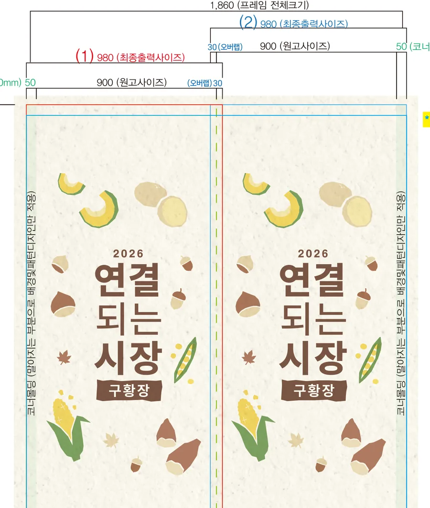

측면 아트워크타이틀 + 작물 모티프
무인양품(MUJI) 커뮤니티 행사 '연결되는 시장 — 구황장'을 위한 포토부스 랩핑 설계입니다. 부스를 실측해 면마다 전개도를 그리고, 제철 작물을 모티프로 한 아트워크를 네 면에 나눠 앉혔습니다.
※ 출력 전 확인용 4면 목업입니다. 왼쪽부터 전면 · 좌우측 · 후면.
부스 랩핑은 큰 그림 한 장을 씌우는 일이 아닙니다. 부스에는 문이 열리는 면이 있고, 모서리가 접히는 면이 있고, 바닥에서 떠 있는 면이 있습니다. 그래서 전면·좌측·우측·후면을 각각 다른 도면으로 그립니다. 이 부스는 전면 850×2,250mm, 좌우 각 980×2,250mm, 후면 960×2,250mm — 면마다 최종 출력 사이즈가 다르고, 모서리를 감아 도는 몰딩분 30mm와 재단 여분까지 도면에 미리 잡아둡니다.
브랜드가 이미 가진 톤을 흉내 내지 않고 그대로 씁니다. 이 행사는 '구황장' — 흉년에 배를 채워준 작물을 주제로 한 커뮤니티 장터였습니다. 그래서 표백하지 않은 종이 질감을 바탕으로 깔고, 호박·감자·고구마·옥수수·도토리를 손그림 톤으로 흩었습니다. 전면에는 브랜드 마크만 두어 비우고, 사람이 가장 오래 마주 보는 좌우측에 행사 타이틀을 크게 앉혔습니다.

브랜드 랩핑에서 사고가 나는 지점은 대부분 디자인이 아니라 치수입니다. 그래서 순서를 고정해 두고, 각 단계에서 다음으로 넘어가도 되는지 먼저 확인합니다.
설치할 부스의 면별 실제 치수를 잽니다. 같은 기종이라도 문 방향·손잡이 위치에 따라 피해야 할 구역이 달라집니다.
면마다 최종 출력 사이즈·원고 사이즈·모서리 몰딩분·재단 여분을 나눠 표기합니다. 이 단계에서 빠진 30mm가 현장에서 뜬 자국으로 남습니다.
브랜드의 기존 톤·서체·컬러를 그대로 받아 적용합니다. 로고를 크게 넣는 것보다, 브랜드가 이미 쓰던 재질감을 살리는 쪽이 대개 더 브랜드처럼 보입니다.
출력을 걸기 전에 부스에 씌운 모습으로 먼저 봅니다. 평면에서 괜찮던 배치가 모서리를 돌면 잘리는 경우를 여기서 걸러냅니다.
네. 부스의 전면·좌측·우측·후면 네 면을 각각 실측 치수에 맞춘 출력물로 감쌉니다. 무인양품 '연결되는 시장' 행사 부스는 전면 850×2,250mm, 좌우 각 980×2,250mm, 후면 960×2,250mm 규격으로 면마다 따로 설계했습니다.
부스 실측 → 면별 전개도 작성(재단선·모서리 몰딩·여분 포함) → 브랜드 톤에 맞춘 아트워크 → 4면 목업 확인 → 출력·시공 순서로 진행합니다. 목업 단계에서 실제 부스에 붙었을 때의 모습을 먼저 확인하고 넘어갑니다.
랩핑은 부스 본체가 아니라 표면 출력물이라, 행사 종료 후 제거하고 부스는 회수합니다. 같은 부스를 다음 행사에서 다른 브랜드 디자인으로 다시 감쌀 수 있습니다.
둘 다 바꿉니다. 외관은 랩핑으로, 손님이 마주하는 화면은 전용 테마로 구성합니다. 화면까지 전부 바꾼 사례는 인천대학교 학위수여식 사례에서 보실 수 있습니다.